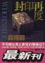
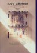

31 30 29 28 | 27 26 25 24
23 22 21 | 19 18 17 16 15
14 | 12 11 10 9 8 7 | 6 5 4 3 2 1 |
8/31 (Thu)
- 本日より奪回した岡本太郎。
- 外に光あり(motivationの話)。
まぁ外にばかり求めてもいかんのだが。
-
全然見掛けないが、 山本義隆「熱学思想の史的展開」は本当に重版されたらしい。
注文すりゃあいい話だな。
- [phys]論文2000/4-2 - 久々、改訂(Rev
1.20)、印刷。
結局今月中には仕上らなかったか…
- 第14戦は戦っているらしい
- 雨が降っている…
- 家に帰ると8/1のダメの説明が届いてる。
「一週間少々」だから「全然ダメ」ってことでは無かったらしい
(cf. ここ)。
「目隠しポーカー」よりもずっと気持が良い。
公募って、落ちた人にただ「ダメでした」って言うだけなのが普通？
(そういうのばっかり。)
8/30 (Wed)
- 曇、小雨、雨
-
8月も終り、夏休みも終り、子供達はあせって宿題やってるのだろう。
私の宿題もまだ。仕上げねば。
- 内がだめなら外に頼むか…(motivationの話)
- 英作文…
-
本年度第14戦(通算41戦目)に参戦(といっても
on-line なので 本当に apply
出来てるか不安)。現在10戦中
-
日記について、二つの厳しさについて、などなど考える。
-
森博嗣 "who inside " (
amazon.co.jp) 読み切る。 
8/29 (Tue)
8/28 (Mon)
8/27 (Sun)
- かねてより行きたかった 比叡山登山に行く。
ケーブル駅で断念。 次は上まで行こう。
8/26 (Sat)
- 「豚の戦記」読み終る
-
結局借りた３冊の内１冊だけしか読めず。
時間を過ぎたので返却のみ。
-
帰り道、古本屋で
森博嗣
入手
8/25 (Fri)
- [phys]blob proj -
続禁断ネタ、bugはfixされた(24)。
不足計算10やり直し中、結果は良好。
30まで実装、compile中。 現状まとめ
8/24 (Thu)
-
本年度第13戦(通算40戦目)に参戦。現在9戦中
- [phys]blob proj - 続禁断ネタ、
23までよし、24にbug、訂正、再
compile。 不足計算10やり直し中。
勢いで30まで作る、実装は(まずは)26まで、compile中。
- [phys]論文2000/4-2 - 復活、仕上げろ！
CEWのやった事やってない事を考察、
縮約形と完全形ついて考察、前者の後者表現を得る、
定義と打切に悩む…
8/23 (Wed)
- よくやく仕事モード
- [phys]blob proj - 続禁断ネタ、
諸々出来上がる、諸々チェック、良い感じ。
不足計算9,10追加中
-
牧野さん
推薦 の「 波動解析と境界要素法」(京都大学学術出版会)
を手に入れる。 色々書いてある。
- monterey
行き、結構混んでいる様子。(実は連休だった…)
- CCP2000の宿を早くとれ、との事なのでとりあえず予約しておく
8/22 (Tue)
- 諸々の理由から歩いて来たが、凄く暑い…
-
本年度第8-12戦(通算39戦目)に参戦。現在8戦中
(と言っても一月近く反応無しってダメ？)。
目隠しでポーカーをやってい(て全然勝てないでい)る気分
--自分の手がどれくらい悪くて、人の手がどれくらい良いのか分からない。
結局書類書きで一日終る
- ニュースステーション、
「IT技術者が日本に居ないのでインドから人を雇う」ってことを
政治家が言ってはいかん気がする。教育政策の結果という認識はないのか？
番組でもインドの特徴の一つに数学教育が挙げられていたが、
それと国内の「円周率は３」は link
してると思う。
8/21 (Mon)
- 休み明け
- CCP2000より
accept の知らせが届く。
こう言うのは基本的に通るものだろうけど。
- 〆切を過ぎていた 第32回流体力学講演会の前刷り原稿、慌てて書き上げる。
(ここ)
-
本年度第7戦(通算34戦目)に参戦。現在3戦中。
- これ落ちたらダメだろう…
-
今後9月前半〆切が多くあるので出せるだけ出す予定(6戦)。
(休みの間に一つ逃していた…)
- 書類準備に明けくれる
8/20 (Sun)
-
NHKスペシャル「世紀を越えて・摩擦の壁を打ち破れ」
面白かった。
- 20年かけて完成する気の長さに感心 (そんな
long-term
食うに困らない環境ってあったら欲しい…)
- 番組で中心的に feature
されてた人は、engineer というより coordinator
だと感じた
- 彼が色々 pick-up した engineer
の人達がそれぞれ凄い
(執念とか、発見に至る糸口とか、問題点の潰し方とか…)
8/19 (Sat)
8/18 (Fri)
8/17 (Thu)
8/16 (Wed)
8/15 (Tue)
8/14 (Mon)
- 今週は夏休み、と言いつつ、自宅から少し仕事
- [phys]blob proj - 続禁断ネタ、
再チェック終了、20以上はダメ、 trans
src終了、組込、compile中、 drv
compile終了、 red-trace計算中…
8/12 (Sat)
- Nikon テレスコマイクロ8×20D早速届く。
予定より遅いよりは速い方が気分はいいか。
バランスが悪いのと倍率が高いので、三脚を買わないといけない…
-
図書館に本を返却に行く。4冊借りて2冊読んだ。
全部返して別な3冊を借りる。
- [phys]blob proj - 続禁断ネタ、
再チェック中、まだまだ計算中
8/11 (Fri)
- 在宅。
- ダメ届く。現在2戦中。
- 風の歌を聴き終る。
次は「愛の見切り発車」予定。
8/10 (Thu)
最近の APS online
journal は、 cross-reference が click
一つでどんどん行き、 Phys.
Fluids など APS
以外の雑誌との連係も強まっていて、強力だ。
パワーが落ちて来た…
[phys]blob proj - 禁断ネタ(予定通りはまる)、
trouble発生、double化、改訂、チェック中、計算中、
その他も軒並計算中
8/9 (Wed)
- 今日も雷雨。「大気が不安定」らしい。
- [phys]blob proj - 禁断ネタ、一日だけtry、 perm-free
出来た、計算中、compile
中、多分10まで行けた
8/8 (Tue)
- Nikon テレスコマイクロ8×20D
ようやく正式注文(6/16に注文したもの)。
届くのは8/26以降とのこと。 (cf.7/4/2000)
- 雷雨
- [phys]blob proj -
20の後始末終了、チェックを9へ
- [phys]論文2000/4-2 - 改訂(Rev
1.19)、印刷
- [phys]vortex -
改題、眺める、眺める、勉強、本番は残す
8/7 (Mon)
- 仙台は七夕らしい。
- 物性研究
の
「博士論文」アブストラクトおよびリンク
にリンクしてもらった。
- APSより
membership directory の CD-ROM が届く。
しかし PDF
で、見る事は見れる(し検索も出来る？)が遅い。
plain text が一番潰しがきくと思うのだが。
- 最近siam から
announce が来るが、どこかで登録したかな？
- 雷雨
- [phys]blob proj -
20の後始末、古いチェックobsolete送り、チェック中
- [phys]2000/8
- [phys]論文2000/4-2 - 改訂(Rev
1.18)、印刷
8/6 (Sun)
-
原爆の日。
NHKで袋町小学校の壁の伝言板の番組を見る。
-
こういう(原爆、戦争、etc.)ものは「本」とかで残すよりも
「本物」を残して「本物」を見た方がよい (入場料も安いし)。
-
「本物」を見るといろいろ考える。
「本」になると(メディアに載ると)
出来事は既成事実化され、思考が自動化し、人は蓋をする
(ってのは 5/1/2000)。
-
msnジャーナルのURLがmsn.jp.comからmsn.co.jpに変わったようだ。
- 8/6/2010: my tweet
-
simon
singh「フェルマーの最終定理」(新潮社 IBSN
4105393014
amazon.co.jp - 、例えば
森山さんの書評)を久しぶりに読み返す。

- アメリカに居た時偶然録画した PBS で放映された
video を見返す。
（付記：元は BBC の NOVA という科学番組。
cf. 2/26/2008）
video で andrew wiles が語った言葉がそのままが本に「」で書かれている。
日本でも NHK で放映されたようだが、前半が録れてないので
誰か貸してくれないかな(だが本を読む限り番組の価値は 後半の wiles
自身の発言にあるようだ)。
wiles
「実は、ケンブリッジに入ったときにフェルマーの問題をいったん棚に上げた
のです。どうでもよくなったわけではありません。
いつも心の中にありましたから。」(p.207)
志村
「谷山は、たくさんの間違いを犯す、それもたいていは正しい方向に間違う
という特別な才能に恵まれていた。私はそれがうらやましく、
真似してみようとしたが無駄だった。そうしてわかったのは、
良い間違いを犯すのは非常に難しいということだった。」
問題解決のエキスパートは、相矛盾する二つの資質をそなえていなければ
ならない--たえまなく湧きあがる想像力と、じっくり考えるしぶとさである。
ハワード W. イーヴズ
ワイルズはまず、最新の数学雑誌にかたっぱしから目を通し、
新しいテクニックをいじりまわして徹底的に身につけた。
…
この作業は、それから一年半のあいだ続くことになる。(p.258)
wiles 「大事なのは、どれだけ考え抜けるかです。
… 未解決の問題にぶつかったりしたときには、
定石になったような考え方は何の役にも立たないのです。
新しいアイディアにたどりつくためには、
長時間とてつもない集中力で問題に向かわなければならない。
その問題以外のことを考えてはいけない。
ただそれだけを考えるのです。
それから集中を解く。
すると、ふっとリラックスした瞬間が訪れます。
そのとき潜在意識が働いて、新しい洞察が得られるのです。」
nick katz
「おそらく問題は、講義を聴くときの態度にあるのだと思います。
すべてを理解することと、講義する人のじゃまをしないこと、
その兼ね合いが難しいのです。
もしもひっきりなしに質問していたら…講義する方は何も説明できなくなり、
聴く方も結局は何もわからずじまいになるでしょう。
一方、質問しなければ内容は理解できませんから、
礼儀正しく頷いてはいても、何もチェックできないことになってしまう。…」
せめてもの慰めに、ワイルズはなぜ失敗したのかを知りたかった。
…うまくいかなかった理由を突き止めることにした。…
「この方法を生かせると思っていたわけではありませんが、
少なくとも、なぜだめなのかは説明できるだろうと。
…
すると突然、まったく不意に、信じられないような閃きがありました。
… とてもシンプルで、とてもエレガントで…。
どうして見落としていたのか自分でもわからなくて、信じられない思いで20分間も
じっと見つめていました。
それから、日中は数学科の中を歩き回り、何度も机に戻っては、
それがまだそこにあることを確かめました。」
- 10/31/2006:
二階の書斎に出勤
8/5 (Sat)
-
田口ランディ「コンセント」読了。
- 図書館で借りて来たもの。
- msnジャーナルのコラムを
ずっと読んでるからか、それらを水増しして継ぎ合わせた印象。
イマイチ(というかコラムで完結していて、
解説めいた脚色は余分な気がした--それが小説？)。
8/4 (Fri)
-
昨日でやっと「伝奇集」 (
amazon.co.jp)読了。
- フェニックス宗は全然分からなかった。
- 面白かったものは、
裏切り者と英雄のテーマ、 隠れた奇跡
南部、 刀の形、 八岐の園、
円環の廃虚。
- 独特な、味のある本だった。
- 今日からは村上さんの処女作。
- [phys]2000/8
- [phys]論文2000/4-2 - 改訂(Rev
1.17)、印刷
- [phys]blob proj - ふと魔がさし禁断ネタへ (1/20/2000以来)、
前は筋悪、新algorithm作る、出来た、20可、compile中。
少し疑問。 禁断ネタ、抜けるなら今
8/3 (Thu)
-
「
数学は体力だ!」
と、ただリンクしてみる。
- 鳥取大の Ooshida
Tさんに
このページから リンクして頂いた。
- [phys]vortex - 文献収集
- [phys]論文2000/4-2 - ストーリー考、
SDの証明、IEに戻る、norとlocが正道、高解と低解、三項導出、
locの同定、exより、SDが妥当？三項とは無関係、
後は昔でよし。
- [phys]2000/8
8/2 (Wed)
-
人環物性セミナー
2000
第13回 (際本さん@京大総人)
夏休み特別回
- 面白そうな実験の 話。
応用出来るか？
- reprint もらう
- 地下の講義室に蚊がいた模様、２箇所刺された
- [phys]blob proj -
旧論文2000/4-1の不足計算続行中、こちらに引越し
- [phys]論文2000/4-2 - 考察再び2、
泥沼道諦め難点skip道へ、
低次で閉じてて、Vは悪い事判明。
二重考慮の懸念。
考え直し、高解、低解、絵解き、自然な三項導出、二重考慮ではない(らしい)。
アピールはVの計算表示？
後は書き計算のみ。
- [phys]2000/8
- JFM
より acknowledgement 届く。ちょうど5日。
予定通りここに置いておく。
8/1 (Tue)
- 雨のち快晴
-
ダメ届く。一週間少々で、ということは全然ダメってことだ。
現在3戦中。
- 進めウルトラマン in Ultraman Jazz (
amazon.co.jp)、 joshua の終らないお話し (
amazon.co.jp)、最高
- [phys]論文2000/4-2 - 定式化再び、
fd三分割、自然な導出、現実的に、厳密考察、矛盾…
低解と高解を考察、説明できず、 4/13/2000以来
論文改訂(1.16)、印刷
-
[phys]2000/8
- [TV]
ガチンコ、
藤野「仲良しクラブじゃない」が正しい。
国分の株は上がっていたのだが…
ダイエットの城島の(やさしい)アプローチもおかしい。
31 30 29 28 |
27 26 25 24
23 22 21 |
19 18 17 16 15
14 |
12 11 10 9 8 7 |
6 5 4 3 2 1 |
 2000年8月
2000年8月{kind=link}
{kind=link}
{kind=link}
{kind=link}
{kind=link}
{kind=link}
{kind=link}